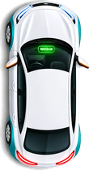
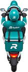

Car
taxi · comfort · quickgo
car-marker.png
Picked automatically by the trip's ride type · teal glow = your assigned driver


Both markers rotate to the driver's heading live — the same assets the Rydon app shows on its own map.